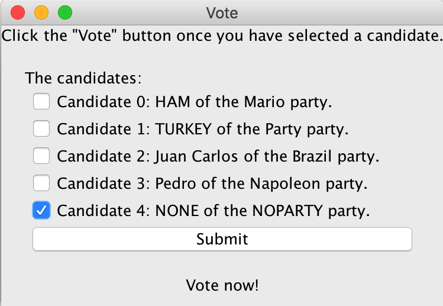
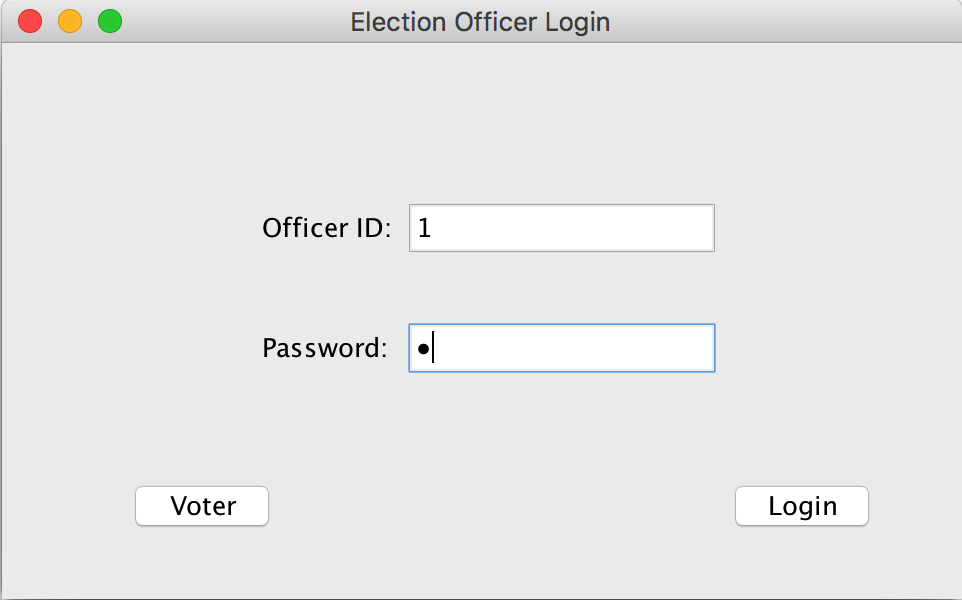

Description: This is a simple electronic voting system created using Java,
interface with Java Swing, and one way hashing to protect your user password data. System containing two actors
The Voter and The Election Officer.
The Voter is able to login and cast a vote.
The Election Officer is able to login and view current results
Voter
e-voting system begins at the voter login screen. Here the voter must enter the
correct Voter ID and Social creteria. Additionally you can enter a special login to get to Election Officer login(see election officer section)
you will then be prompted with a confrimation window to confrim
that you have provided the correct credentials. Selecting "yes" will take you the vote screen which is the
sceen with the candidates up for the current election, selecting "no" will take you back to previous screen.

Selecting a checkbox and pressing select will then cast your vote. The option to vote
for "NONE" of the NOPARTY is always an option.
election officer

Entering the correct login information at Voter login screen will take you to the election officer screen.
Here election officers must enter correct Officer ID along with matching Password to continue to Officer Options.
All officers must be preregistered in ElectionOfficer.txt file using the following format Officer ID, Name, Password.
There are three Officer Options "View Results", "View Percentage" and "Log Out". Choosing View Percentage
gives you the total number of registered voters, the amount that have voted and the percentage that have voted (figure 1).
Selecting View Results shows you how many votes each currently candidate has (figure 2).